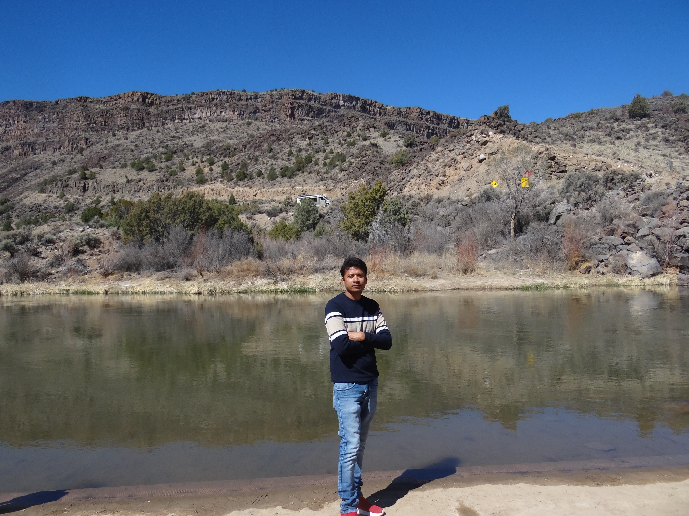

Suneel Babu Chatla, Ph.D.
I am an Assistant Professor in the Department of Mathematical Sciences at The University of Texas at El Paso. My research interests include high-dimensional data analysis, nonparametric and semiparametric methods, generalized linear models, statistical computing, and deep learning.
My recent work includes quantile regression for longitudinal and high-dimensional data, functional data analysis, robust variable selection, inverse regression for spatially distributed functional data, and deep learning methods for scalar-on-function models.
Before joining UTEP, I was a Postdoctoral Researcher at the Institute of Statistics, National Tsing Hua University, Taiwan, where I also received my Ph.D.
You can add Google Scholar, GitHub, LinkedIn, ORCID, and your official faculty profile link here later.